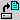
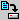
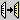
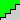
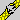
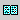
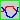
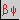
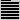
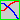

The Toolbar is a row of buttons at the top of the main window which represent application commands. Clicking one of the buttons is a quick alternative to choosing a command from the menu. Buttons on the toolbar activate and deactivate according to the state of the application.
| Button | Action | Menu Equivalent |
|  | Locate and open a file | File|Open |
| Open a text file for editing | File|Open Text | |
|  | Save the file in the active window | File|Save |
| Cut selected text to Clipboard | Edit|Cut | |
|  | Copy selected text or active graphical window to Clipboard | Edit|Copy |
| Paste text from Clipboard | Edit|Paste | |
|  | Change values for increment | Edit|Steps |
|  | Detach text window from output | View|Detach |
| Reverses the last text editing action | Edit|Undo | |
| | Finds a string or expression | Edit|Find |
| Repeat last Find or Replace operation | Search|Next | |
| Prints file | File|Print | |
|  | Shows pages of the document | File|Print Preview |
|  | Close lattice | Tools|Close lattice |
|  | Plots beta function | View|Betas |
|  | Print lattice functions | View|Functions |
| | Calculates the transfer matrix between elements | View|Matrix |
| | Print integrals over lattice | View|Integrals |
|  | Closes the lattice symmetrically | Tools|Close symmetrically |
| Fits Beta-functions, dispersions and tune advances | Fitting|Betas | |
| Stop fitting | Fitting| Stop. | |
| Toggles between line and ring modes | View|Control | |
| Toggles between reference and central orbit modes | View|Control |